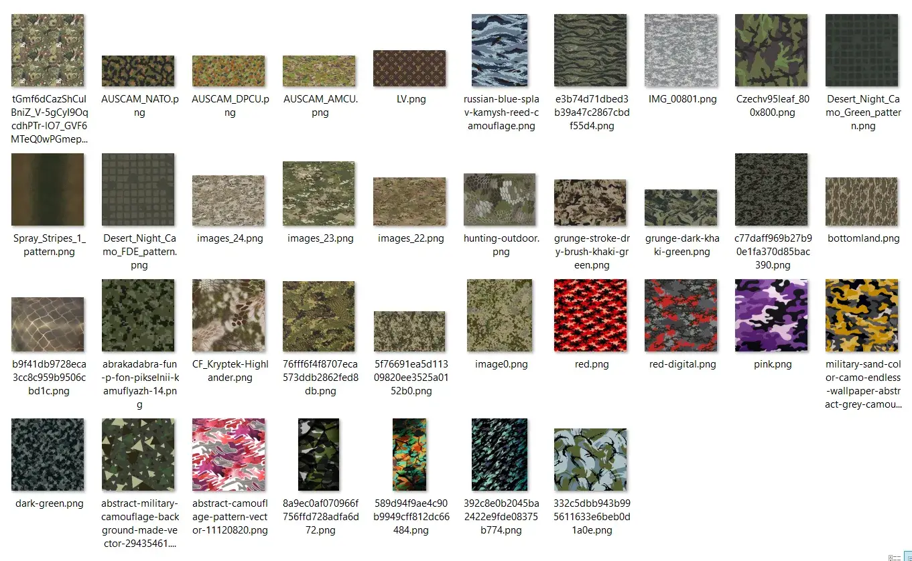
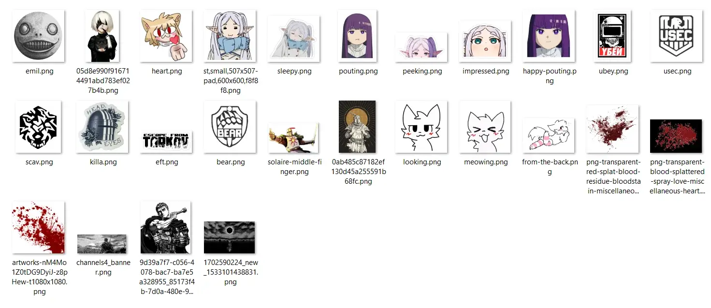
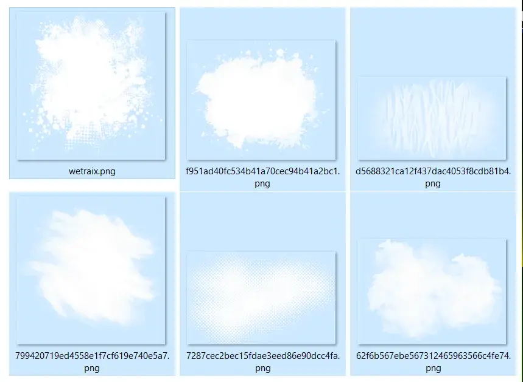

Essential Texture Pack
- Downloads
- 12,361



Let it be a surprise
Go to folder:
Escape from Tarkov/BepInEx/plugins/7Bpencil.WeaponCamoAndStickers
You are interested in two subfolders: presets and textures
-
presetsfolder contains presets, if you made cool camo and want to share it with people (or don’t want to lose it on death), save it as preset (green disket button in camo editor). -
texturesfolder contains three subfolders: camos, stickers, masks. I strongly suggest to create your own subfolders inside these three, example:camos/my-unique-name/my-camo-texture.png. Also there is a good reason to keep camos, stickers and masks in different folders, do not mismatch them. -
After you gathered enough unique textures or presets, upload your
7Bpencil.WeaponCamoAndStickersfolder to forge (make sure your archive file structure is similar toEssential Texture Pack, and you have not included textures/presets from other packs) -
I recommend adding preview images of at least some of the textures in your pack gathered together (in explorer search window type *.png and it will show them all). This way players can get the feeling of your pack theme without the hassle of downloading/unpacking/launching game/going into camo editor.
-
Here’s the markdown of this addon description, in case you don’t know how to embed images or make tabs: link
-
I recommend setting addon
Mod Version Constraintto1.*
Version
1.1.0
- Added animated textures
- Added preset with animated textures (ASH-12)
Version
1.0.1
CHANGES:
- Moved files from SPT/user/mods to BepInEx/plugins to comply with content guidelines
- No other changes, you can skip this version if you properly updated main mod from 1.0.0 to 1.0.1
Version
1.0.0
Initial release
nuked from forge, try source code url